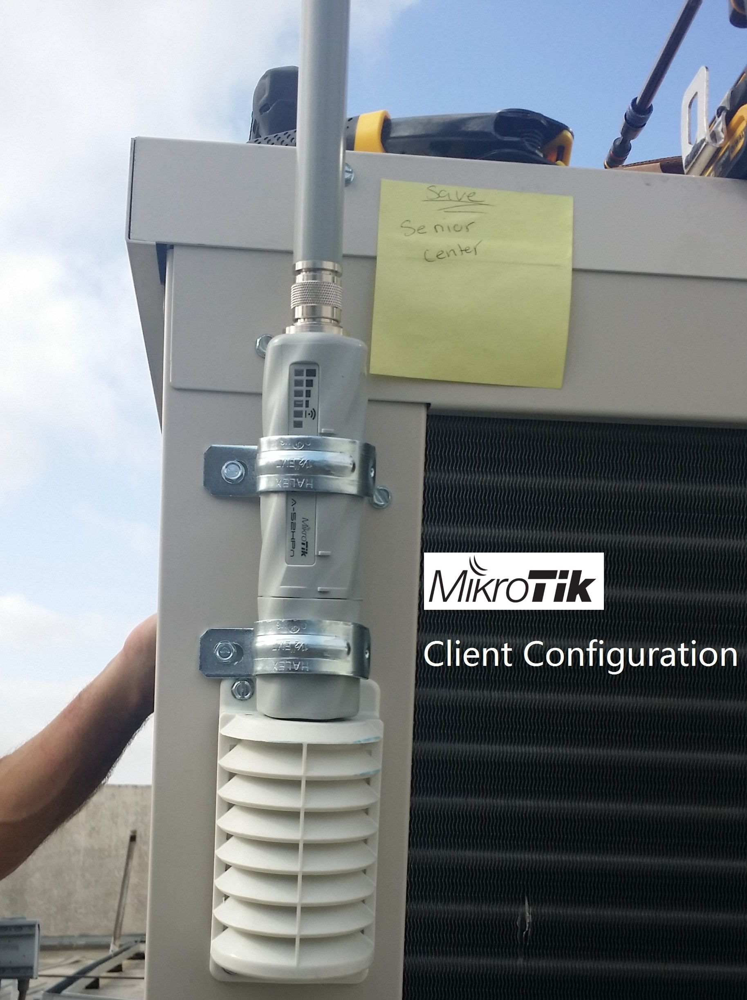
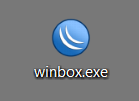
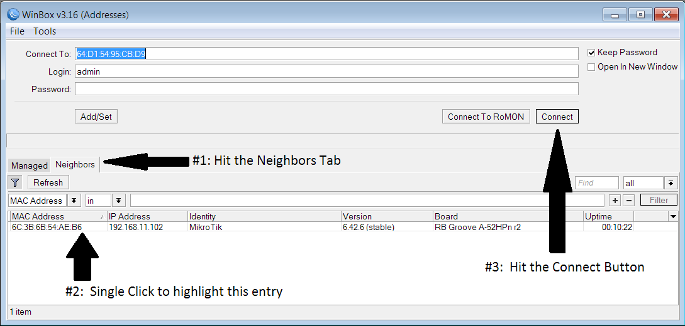
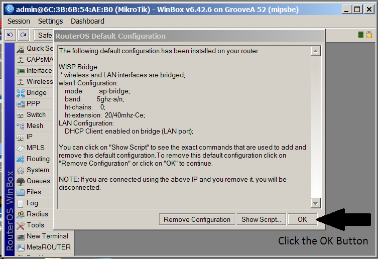
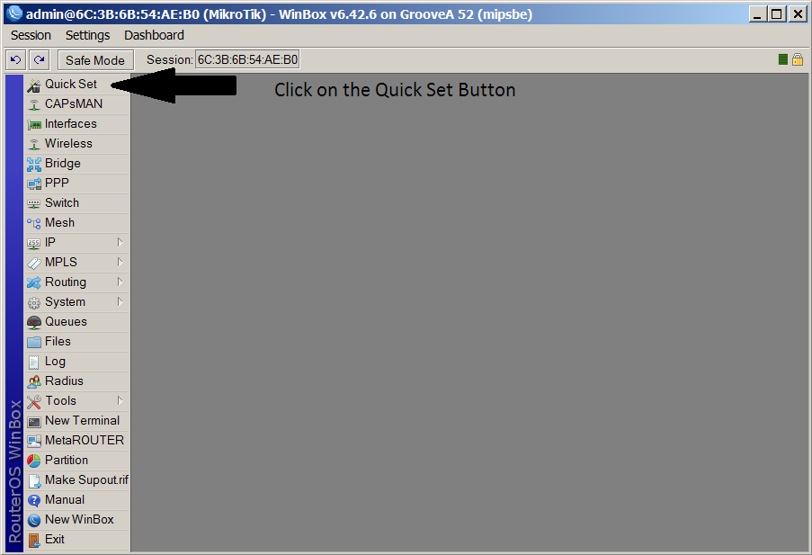
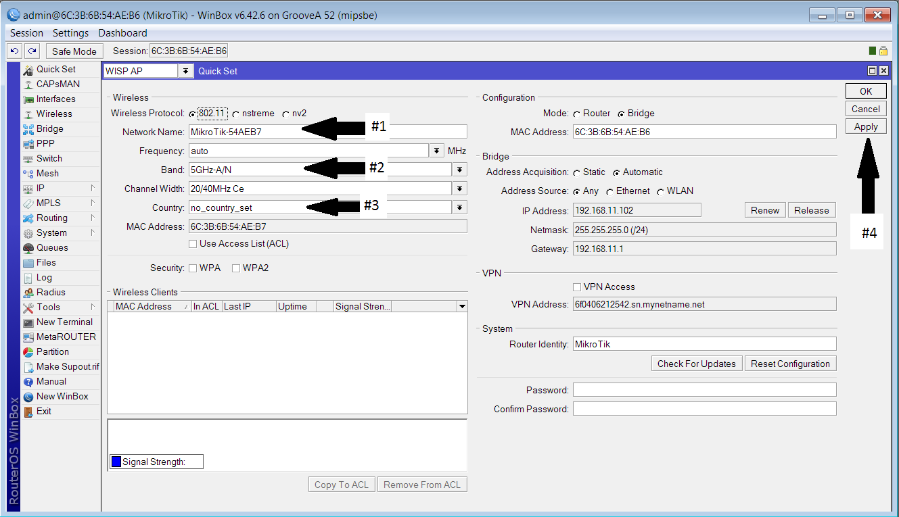
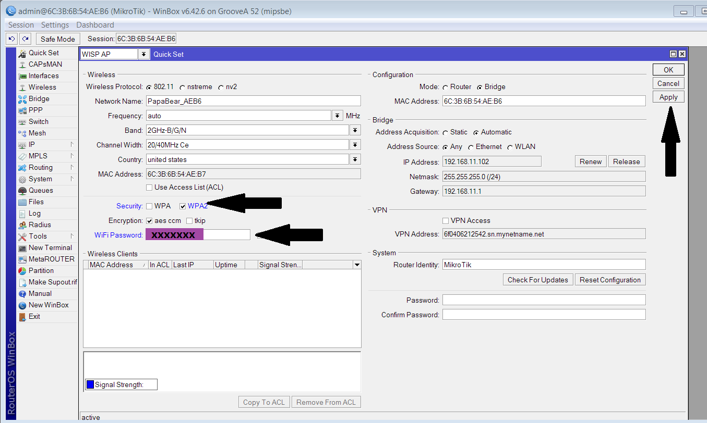
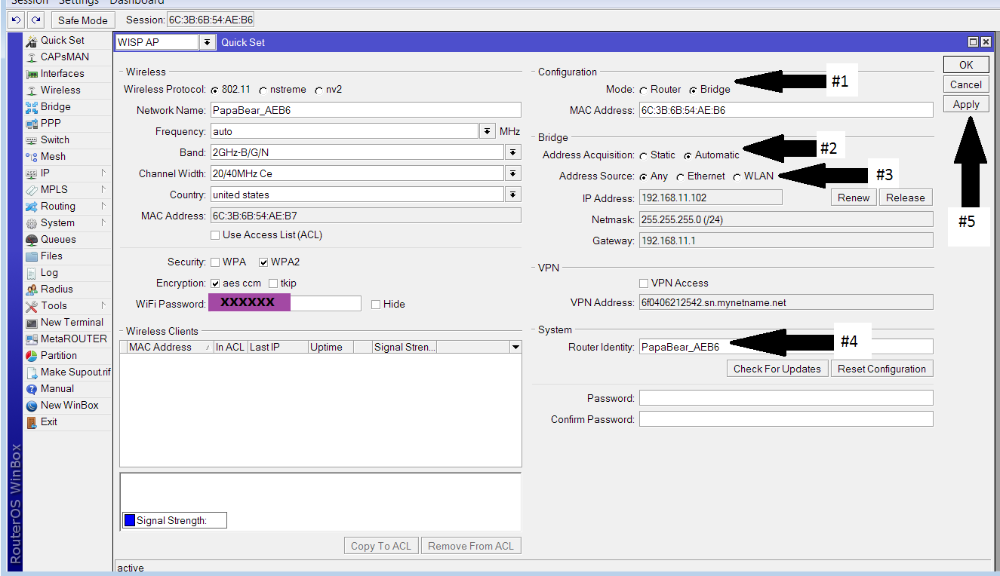
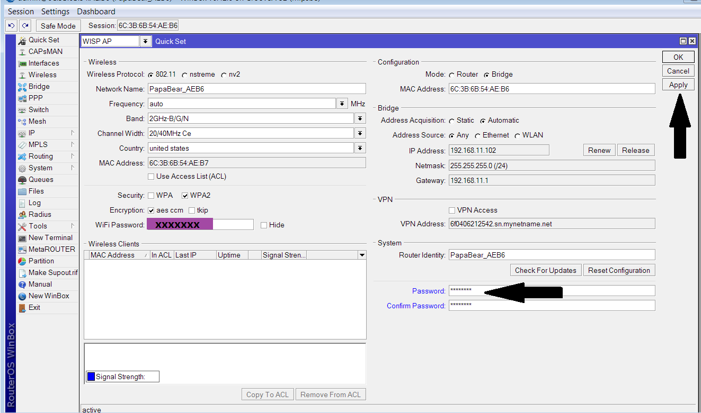

Quick Summary
This document has a series of screenshots along with explanations, that will walk you through an example of setting up a MikroTik as the Client.
The basic config strategy is: CPE. CPE is an abbreviation for Customer Premises Equipment.
Translation: it’s a WiFi Bridge to a Wireless Access Point.
The WiFi Bridge is a substitute for a wired connection. A setup like this can be used instead of physically running ethernet cable.
Install ‘Winbox’
Winbox is a configuration tool from MikroTik.
Up towards the top of that page, click on the ‘Winbox’ button, which is really a drop-down. When it drops down, the version of Winbox will be shown. At the writing of this document, the version was 3.16. Click on it, let it download, then move it to the Desktop for easy access.
The winbox desktop icon is shown in the picture below.

Start with a known Router Configuration
Here are the steps:
- Start with MikroTik not powered
- Get a small screwdriver or similar, use it to hold down the Reset button
- With reset held down, power on the MikroTik (you need 3 hands!)
- When Leds start to Blink (watch for them), release the Reset button
- Wait about 15 seconds. Good to go.
Make sure the PapaBear router is Configured and Setup
One of the Key steps in setting up the MikroTik Client is the act of pairing it with the PapaBear Router. In order to do this, the PapaBear router must be up and working.
If it is not up and discoverable, this Client installation will not work.
Use Winbox to Discover and Connect
Use a PC that is not connected to any network. Remove the ethernet cable if attached. Disconnect any wifi that is currently connected.
With the PC now isolated from any network, plug in the ethernet cable of the MikroTik, in to the PC.
Having the MikroTik connected directly to the PC will sometimes help in the self-discovery.
OK, now double-click on ‘winbox’, and let it run. Click on the ‘Neighbors’ tab, and the powered-on MikroTik should be discovered:
Double-Click on Winbox, and let it run. Click on the ‘Neighbors’ tab, and the MikroTik should be discovered:

It should self-discover. Hit ‘refresh’ a few times if you don’t see it.
Once it shows, Single Click on that entry to Highlight it, then hit ‘Connect’.
This is what you will see on the 1st connection

Click on ‘Quick Set’ to bring up the configuration page

As a point of note for later on in the configuration, the only other tab on this page that will be clicked on is:
‘Interfaces’
The ‘Interfaces’ page is not needed until everything on the Quick Set page is complete
Change Name, Country, and Band

Step 1. Change the Network Name to PapaBear_something. Where ‘something’ could be the last 4 digits of the MAC.
Step 2. Change the Band to 2GHz-B/G/N
Step 3. Change country to United States
Step 4. Hit Apply. Re-connect if winbox loses communications with the unit.
Add WiFi Password

Choose ‘WPA2’ as the Security Type.
Enter the WiFi Password, then click on Apply
Configure as Bridge

For Mode, select ‘Bridge’
Address Acquisition is ‘Automatic’
Address Source is ‘Any’
Change the Router Identity to the same as ‘Network Name’. This will be the name that shows up in the DHCP clients’ table on the router.
Click Apply. Almost done.
Enter Password for Router

Note this is not the WiFi password: this is the Password that allows you to edit this configuration.
Enter the Secret Password. You should know what it is.
Hit Apply.
You’re done. You can hit ‘OK’, and exit out of Winbox.
Your PapaBear Router should be configured.